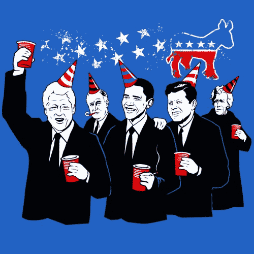
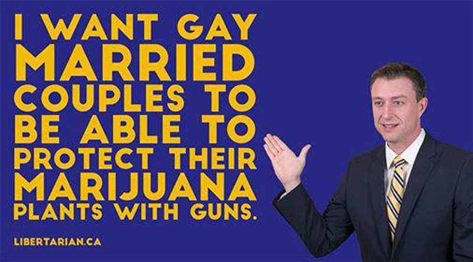
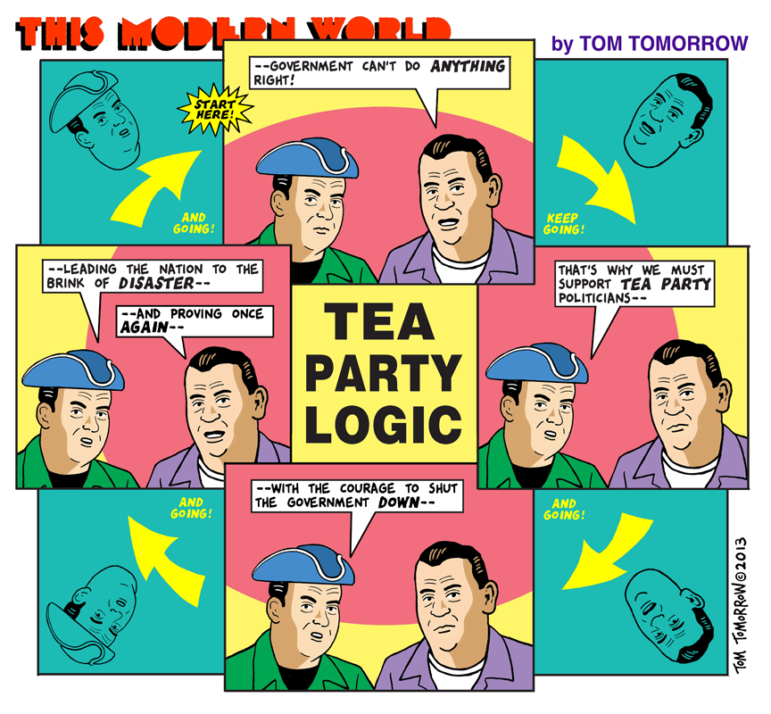
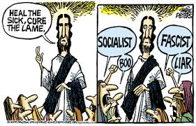

then you're probably not a republican. But let's see if we can figure out what you think you really are then. Click the button to find out.
Congratulations! Welcome to the Democrat party!
You think man is causing global warming and climate change
You think recycling should be a religion
You want old people and people who are disabled to get governement assistance
You are ambivalent about what to do outside our borders
You can't fight, are afraid of confrontation, hate guns, hug trees, embryos, stem cells and anything wrapped in a rainbow, wearing Birkinstocks or smoking dope

Republican Democrat
Well, since you're not a republican nor a democrat, let's see if we can figure out what you think you really are then.
Congratulations!! You're a Libertarian! You:
Hate taxes
Hate laws
Hate the government
Hate regulation
Hate Democrats and Republicans
Love the 2nd Amendmant more than your wife, dog and food
You think polluters should pay for polluting

Republican Democrat Libertarian
Well, since you said you're not a Republican, Democrat nor Libertarian, then let us try again. Click and see.
SURPRISE!! You're a Teabagger! So, you're a teabagger if:
You mocked Nancy Pelosi for getting emotional when she reflected on the murder of her friend, Mayor George Moscone, but you think it’s manly when John Boehner blubbers when he watches reruns of Flipper.
You think Climate Change is a big hoax because Senator James Inhofe, firmly in the pocket of the oil companies says it’s bogus.
You think president Obama’s birth certificate is a forgery, and that he managed to fool the CIA, FBI, NSA, Secret Service and the entire US government archive of documents with one Photoshopped image.
You think president Obama is a socialist, because he wants all Americans to pay their share of taxes, including the rich, and all Americans to enjoy the same benefits of an equitable society, including the same healthcare that Congress enjoys.
Congratulations!

Republican Democrat Libertarian Teabagger
So, you're not any of the above. You're probably a socialist. Feel the Bern, brah!
Congrats! You're feeling the Bern
You don't believe in profit just for a few.
You believe in a just society.
You believe that Democracy and socialism go hand in hand.
You don't believe in creating an all-powerful government bureaucracy that owns everything.
Congrats! You're feeling the Bern
Bernin' up!
